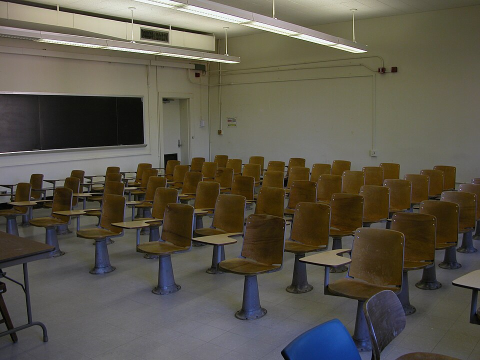

학교 교실 (이미지) · 사진: Ildar Sagdejev (Specious) / Wikimedia Commons, CC BY-SA 3.0
국제학교 재등록(Re-enrollment) — 다음 학년 자리는 보통 겨울에 정해집니다
1. 재등록이란 무엇인가
재등록은 지금 다니는 아이가 다음 학년에도 계속 다니겠다는 의사를 학교에 공식적으로 알리는 절차입니다. 학교마다 이름이 다릅니다. Re-enrollment, Re-registration, Continuing Enrolment, Intent to Return 같은 표현을 씁니다. 형태는 보통 학부모 포털에서 양식을 제출하거나, 안내문에 적힌 기한까지 회신하는 방식입니다.
왜 이런 절차가 있냐면, 국제학교는 해마다 학년별 정원을 다시 짜기 때문입니다. 주재원 가정이 많은 학교일수록 매년 들어오고 나가는 학생이 많습니다. 학교 입장에서는 재학생이 몇 명 남는지를 먼저 확정해야 신입생을 몇 명 받을지, 반을 몇 개 열지, 교사를 몇 명 둘지를 정할 수 있습니다.
그래서 순서가 이렇게 됩니다. ① 재학생에게 의사를 묻는다 → ② 응답을 받아 남는 자리를 센다 → ③ 그 자리를 신입생·대기자에게 배정한다. ①에서 답이 없으면 그 자리는 ③으로 넘어갈 수 있습니다. 악의가 있어서가 아니라 절차가 그렇게 설계되어 있습니다.
2. 한국 학교와 무엇이 다른가
| 항목 | 한국 학교(공교육) | 국제학교 |
|---|---|---|
| 다음 학년 자리 | 재학 중이면 기본적으로 유지 | 해마다 다시 확정하는 절차가 있음 |
| 가정이 할 일 | 특별히 없음 | 기한 안에 의사 표시(양식 제출·회신) |
| 안 하면 | 해당 없음 | 자리가 다른 학생에게 넘어갈 수 있음 |
| 형제·자매 | 해당 없음 | 우선 배정 제도를 두는 학교가 있으나 자동은 아님 |
| 비용 | 해당 없음 | 재등록 시 예치금·보증금을 받는 학교가 있음(학교마다 다름) |
| 번복 | 해당 없음 | 이후 취소하면 환불 조건이 따로 적용될 수 있음 |
※ 절차 이름·기한·비용·환불 조건은 학교마다 전혀 다릅니다. 위 표는 "한국 학교와 발상이 다르다"는 점을 보여 드리기 위한 정리입니다. 이 글로 판단하지 마시고 다니는 학교의 올해 안내문을 기준으로 삼으세요.
3. 주재원 가정이 겪는 진짜 문제 — 기한이 어긋납니다
여기가 핵심입니다. 재등록 자체는 양식 하나 내는 간단한 일입니다. 문제는 결정에 필요한 정보가 그때 아직 없다는 것입니다.
주재원 가정의 1년은 보통 이렇게 흘러갑니다. 회사의 임기 연장·귀임 여부가 확정되는 시점은 봄 이후인 경우가 많습니다. 그런데 학교의 재등록 응답 기한은 그보다 앞서는 경우가 많습니다. 즉 "돌아갈지 모르는 상태에서 다음 해 자리를 확정해야 하는" 구간이 생깁니다.
이때 가정에서 하시는 선택은 대개 셋 중 하나인데, 세 번째가 가장 안 좋습니다.
· ① 일단 재등록해 두고, 귀임이 확정되면 취소한다 — 가장 흔한 선택입니다. 다만 예치금 환불 조건을 먼저 확인하셔야 합니다.
· ② 학교에 상황을 알리고 기한을 물어본다 — 가장 권해 드리는 쪽입니다. 아래에서 설명드리겠습니다.
· ③ 확실해질 때까지 답을 미룬다 — 가장 위험합니다. 자리가 넘어간 뒤에는 되돌릴 방법이 없는 경우가 많습니다.
②를 권해 드리는 이유는, 학교가 이 상황을 이미 여러 번 겪어 봤기 때문입니다. 주재원 자녀가 많은 학교라면 "본사 결정이 아직 안 났다"는 사정은 매년 반복되는 일입니다. 응답 기한을 조금 늦춰 주거나, 조건부로 처리하는 방식이 안내되는 경우가 있습니다. 묻는다고 불이익이 생기지 않습니다.
다만 기한 하루 전에 묻지 마세요. 안내문을 받은 그 주에 물으시는 것이 좋습니다. 이렇게 쓰시면 됩니다.
"회사의 발령 연장 여부가 ○월에 결정될 예정이라 그때까지 확답을 드리기 어렵습니다. 저희 같은 사정일 때 응답 기한이나 예치금 처리가 어떻게 되는지 알려 주실 수 있을까요?"
마카오처럼 도시 안에 선택지가 적은 지역이나, 자리가 잘 나지 않는 학교일수록 이 부분이 치명적입니다. 한 번 놓치면 같은 도시 안에서 대안을 찾기 어렵습니다.
4. 자주 하는 오해 5가지
· ① "메일을 봤으면 된 줄 알았다." — 재등록은 읽는 것이 아니라 제출하는 것입니다. 포털에 들어가 양식을 내야 완료되는 경우가 대부분입니다. 완료 확인 메일이 왔는지까지 보세요. → 학습 플랫폼·시간표 읽는 법
· ② "담임 선생님께 말씀드렸다." — 담임은 행정 절차의 창구가 아닌 경우가 많습니다. 재등록은 보통 입학·등록 담당 부서가 처리합니다. 구두로 전한 것은 기록에 남지 않습니다.
· ③ "형제가 다니니까 동생은 당연히 들어간다." — 형제·자매 우선 제도를 두는 학교가 있지만 자동 배정은 아닙니다. 동생의 입학 신청은 별도 절차인 경우가 많습니다.
· ④ "성적이 좋으니 괜찮다." — 재등록은 성적 심사가 아니라 자리 확정 절차입니다. 성적과 무관하게 기한이 지나면 처리됩니다. (반대로 학업·출결에 대한 조건이 붙는 학교도 있어 그 경우는 안내문에 따로 적힙니다. → 출결 규정)
· ⑤ "학비를 내고 있으니 다음 해도 보장된다." — 올해 학비와 내년 자리는 별개로 관리됩니다.
5. 가정에서 할 네 단계
· ① 학년 초에 학사 일정을 한 번 훑는다. 학교 홈페이지의 캘린더에서 재등록·과목 신청·학부모 상담이 몇 월에 있는지만 미리 봐 둡니다. 날짜까지 외울 필요는 없고 "겨울 어디쯤"이라는 감만 있으면 됩니다.
· ② 학교 메일을 받는 주소를 하나로 정한다. 재등록 안내가 스팸함으로 들어가서 놓치는 경우가 실제로 많습니다. 부모 두 분 중 누가 학교 메일을 본다고 정해 두세요.
· ③ 안내문이 오면 그 주에 세 가지를 확인한다. 기한이 언제인지 / 예치금이 있는지 / 취소하면 환불 조건이 어떤지. 이 세 가지만 메모해 두면 나중에 급하게 결정하지 않아도 됩니다.
· ④ 제출한 뒤 확인 메일을 보관한다. 포털 제출은 중간에 끊기는 일이 있습니다. 완료 화면이나 확인 메일을 캡처해 두세요.
6. 재등록 시기는 공부 계획을 세우기 가장 좋은 때입니다
의외로 그렇습니다. 재등록을 결정하는 겨울 무렵에는 1학기 성적표가 이미 나와 있고, 다음 학년 과목 신청도 비슷한 시기에 이어지는 경우가 많습니다. 즉 지금 무엇이 부족한지와 내년에 무엇을 담을지를 동시에 놓고 볼 수 있는 유일한 구간입니다.
이 시기에 권해 드리는 순서는 이렇습니다.
· 첫째, 성적표를 펴고 가장 많이 반복된 코멘트 한 줄을 찾습니다. 과목이 달라도 같은 말이 반복되는 경우가 많습니다. → 성적표 읽는 법
· 둘째, 그 한 줄이 영어 쪽인지 수학 쪽인지, 아니면 기한 관리 쪽인지 가릅니다. 셋은 해결 방법이 전혀 다릅니다. → 숙제·과제 관리
· 셋째, 다음 학년 과목 신청에서 그 약점이 더 크게 작동할 과목이 있는지 봅니다. → 과목 신청(Course Selection)
· 넷째, 학부모 상담이 있다면 이 세 가지를 들고 갑니다. → 학부모 상담 준비법
과외를 붙이신다면 이 시기에는 과목을 늘리기보다 하나를 끌어올리는 편이 효과가 큽니다. 다음 학년이 시작되면 새 과목과 새 평가 방식에 적응하느라 손을 댈 여유가 줄어듭니다.
정리
국제학교의 재등록은 "계속 다니겠다"는 의사를 기한 안에 알리는 절차입니다. 한국 학교처럼 자동으로 올라가지 않고, 응답이 없으면 자리가 넘어갈 수 있습니다. 주재원 가정은 발령 연장 결정과 재등록 기한이 어긋나는 구간을 매년 만나는데, 혼자 미루지 마시고 안내문을 받은 그 주에 학교에 물어보시는 것이 가장 안전합니다. 그리고 이 시기는 성적표·과목 신청이 함께 놓이는 때라 1년 공부 계획을 세우기에 가장 좋습니다. 30분 무료 상담으로 아이의 성적표를 함께 보고 내년에 무엇부터 잡을지 짚어 드리겠습니다.